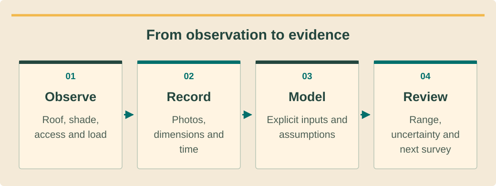

Shared foundationבסיס משותףพื้นฐานร่วม · 5 / 8
Survey the site and read a production estimateסוקרים את האתר וקוראים אומדן תפוקהสำรวจสถานที่และอ่านประมาณการผลิต
Turn a roof photo into a list of verified facts, unknowns and design inputs.הופכים צילום גג לרשימת עובדות בדוקות, שאלות פתוחות ונתוני תכנון.เปลี่ยนภาพหลังคาเป็นรายการข้อเท็จจริงที่ตรวจแล้ว สิ่งไม่ทราบ และข้อมูลออกแบบ
What you will be able to doמה תדעו לעשותสิ่งที่คุณจะทำได้
- Separate visible site observations from engineering approval.להפריד תצפיות גלויות באתר מאישור הנדסי.แยกสิ่งที่เห็นจากการรับรองวิศวกรรม
- Identify shade, access, climate and routing constraints.לזהות אילוצי הצללה, גישה, אקלים ותוואי.ระบุข้อจำกัดเงา ทางเข้าถึง ภูมิอากาศ และแนวเดิน
- Explain model assumptions and uncertainty in a production estimate.להסביר הנחות מודל ואי־ודאות באומדן תפוקה.อธิบายสมมติฐานและความไม่แน่นอนของประมาณการผลิต
Evidence before dimensionsראיות לפני מידותหลักฐานก่อนขนาด
Begin with a site record: address, meter identity, permission to survey, roof zones, safe observation points and the people who can answer property questions. A drone image is useful context, but it cannot prove structural capacity, hidden roof damage, ownership rights or the suitability of electrical equipment. Mark each unverified item as an open question.התחילו בתיק אתר: כתובת, זהות מונה, רשות לסקור, אזורי גג, נקודות תצפית בטוחות ואנשים שיכולים לענות על שאלות הנכס. צילום רחפן נותן הקשר, אך אינו מוכיח כושר נשיאה, נזק נסתר בגג, זכויות בעלות או התאמת ציוד חשמלי. סמנו כל פרט שלא אומת כשאלה פתוחה.เริ่มแฟ้มสถานที่ด้วยที่อยู่ มิเตอร์ สิทธิสำรวจ โซนหลังคา จุดสังเกตที่ปลอดภัย และผู้ตอบคำถามทรัพย์สิน ภาพโดรนช่วยให้เห็นบริบทแต่พิสูจน์กำลังรับน้ำหนัก ความเสียหายซ่อน สิทธิในทรัพย์สิน หรือความเหมาะสมอุปกรณ์ไฟไม่ได้ ระบุสิ่งที่ยังไม่ตรวจเป็นคำถามเปิด
Use consistent photo labels and a marked plan so that observations can be located later. Distinguish a measured distance from an approximate image measurement. Record who measured it and when. The next designer should not have to guess which roof face a number describes or whether a proposed cable route has been physically inspected.השתמשו בתוויות צילום עקביות ובתוכנית מסומנת כדי לאתר תצפיות בהמשך. הפרידו מרחק מדוד מהערכה מתוך תמונה. תעדו מי מדד ומתי. המתכנן הבא לא צריך לנחש לאיזה שיפוע גג מתייחס מספר או אם תוואי כבלים מוצע נבדק פיזית.ติดป้ายภาพสม่ำเสมอและทำแผนผังระบุจุดเพื่อกลับหาได้ แยกระยะวัดจริงจากประมาณผ่านภาพ บันทึกผู้วัดและเวลา ผู้ออกแบบถัดไปไม่ควรต้องเดาว่าตัวเลขหมายถึงหลังคาด้านไหนหรือสำรวจแนวสายที่เสนอจริงแล้วหรือยัง
A roof area is not a buildable layoutשטח גג אינו פריסה שאפשר לבנותพื้นที่หลังคาไม่ใช่ผังที่สร้างได้ทันที
Usable module area depends on structural review, roof geometry, obstructions, required access, drainage, maintenance and applicable project rules. Coconut trees and adjacent buildings can cast changing shadows. A photograph at noon misses morning or seasonal shading. Preserve the observation time and request the shading analysis appropriate to the design decision.שטח מתאים לפאנלים תלוי בבדיקה מבנית, גאומטריית גג, מכשולים, גישה נדרשת, ניקוז, תחזוקה וכללים החלים על הפרויקט. עצי קוקוס ומבנים סמוכים עשויים להטיל צל משתנה. צילום בצהריים מפספס הצללת בוקר או עונה. שמרו את זמן התצפית ובקשו ניתוח הצללה שמתאים להחלטת התכנון.พื้นที่วางแผงขึ้นกับตรวจโครงสร้าง รูปร่างหลังคา สิ่งกีดขวาง ทางเข้าถึง ระบายน้ำ บำรุงรักษา และกฎโครงการ ต้นมะพร้าวกับอาคารข้างเคียงให้เงาที่เปลี่ยนไป ภาพเที่ยงพลาดเงาเช้าหรือตามฤดู บันทึกเวลาสังเกตและขอวิเคราะห์เงาที่เหมาะกับการตัดสินใจ
Do not solve a space conflict by silently removing access or a structural requirement. Compare alternatives and escalate the constraint. A smaller defensible layout may be preferable to a larger one that depends on unresolved roof work. The commercial and planning teams need the same marked exclusions so that quoted capacity matches the design basis.אל תפתרו חוסר מקום באמצעות ביטול שקט של גישה או דרישה מבנית. השוו חלופות והציפו את האילוץ. פריסה קטנה שאפשר להצדיק עשויה להיות עדיפה על גדולה שתלויה בעבודות גג לא פתורות. מכירות ותכנון צריכים אותן החרגות מסומנות כדי שההספק בהצעה יתאים לבסיס התכנון.อย่าแก้พื้นที่ไม่พอด้วยการตัดทางเข้าหรือข้อกำหนดโครงสร้างเงียบ ๆ เปรียบเทียบทางเลือกและส่งต่อข้อจำกัด ผังเล็กที่ยืนยันได้อาจดีกว่าผังใหญ่ที่อาศัยงานหลังคาค้าง ฝ่ายขายและออกแบบต้องเห็นพื้นที่ยกเว้นเดียวกันเพื่อให้กำลังในข้อเสนอตรงฐานแบบ
See the ideaרואים את הרעיוןมองเห็นแนวคิด
From observation to evidenceמתצפית לראיותจากการสังเกตสู่หลักฐาน

Read the diagram as textקריאת התרשים כטקסטอ่านแผนภาพเป็นข้อความ
- Observeמתבונניםสังเกต — Roof, shade, access and loadגג, צל, גישה ועומסหลังคา เงา ทางเข้า และโหลด
- Recordמתעדיםบันทึก — Photos, dimensions and timeתמונות, מידות ושעהภาพ ขนาด และเวลา
- Modelממדליםจำลอง — Explicit inputs and assumptionsקלט והנחות מפורשיםข้อมูลเข้าและสมมติฐานชัดเจน
- Reviewבודקיםทบทวน — Range, uncertainty and next surveyטווח, אי־ודאות וסקר המשךช่วงผล ความไม่แน่นอน และสำรวจเพิ่ม
The island environment affects the whole lifecycleסביבת האי משפיעה לאורך כל חיי המערכתสภาพเกาะมีผลตลอดอายุระบบ
Heat, humidity, salt exposure, rain and severe weather are design and maintenance inputs, not decorative context. Identify the exposure of mounting materials, enclosures, cable supports and service access. Ask for product suitability and the applicable installation manual. An enclosure rating or a generic “coastal” label alone does not settle every corrosion or placement question.חום, לחות, חשיפה למלח, גשם ומזג אוויר קיצוני הם נתוני תכנון ותחזוקה ולא רק רקע. מזהים את החשיפה של חומרי הקונסטרוקציה, ארונות, תומכי כבלים ודרכי שירות. מבקשים התאמת מוצר ומדריך התקנה חל. דירוג אטימות או תווית כללית ״חופי״ אינם פותרים כל שאלת קורוזיה או מיקום.ความร้อน ความชื้น เกลือ ฝน และอากาศรุนแรงเป็นข้อมูลออกแบบและบำรุง ไม่ใช่ฉากหลัง ระบุการสัมผัสของวัสดุโครง ตู้ อุปกรณ์รองสาย และทางบริการ ขอหลักฐานความเหมาะสมผลิตภัณฑ์กับคู่มือติดตั้ง พิกัดตู้หรือคำว่า “ใช้ชายฝั่ง” อย่างเดียวไม่ได้ตอบทุกเรื่องกัดกร่อนและตำแหน่ง
Site planning also includes delivery and future replacement. A battery that can reach the property only through a narrow stair needs a handling plan before purchase. An inverter that cannot be accessed safely for maintenance creates a lifecycle problem. Record these constraints early, with photographs and an owner for the proposed resolution.תכנון האתר כולל גם הובלה והחלפה עתידית. סוללה שיכולה להגיע לנכס רק דרך מדרגות צרות דורשת תוכנית שינוע לפני רכישה. ממיר שאין אליו גישה בטוחה לתחזוקה יוצר בעיה לאורך חיי המערכת. תעדו אילוצים מוקדם, עם תמונות ואחראי לפתרון המוצע.แผนสถานที่รวมขนส่งและเปลี่ยนในอนาคต แบตเตอรี่ที่เข้าได้เฉพาะบันไดแคบต้องมีแผนเคลื่อนย้ายก่อนซื้อ อินเวอร์เตอร์ที่เข้าบำรุงไม่ปลอดภัยสร้างปัญหาตลอดอายุ บันทึกข้อจำกัดแต่ต้นพร้อมภาพและเจ้าของแนวแก้
A model is a traceable estimateמודל הוא אומדן שניתן לעקוב אחריוแบบจำลองคือประมาณการที่ตรวจย้อนกลับได้
A production model combines weather data and system assumptions. Record the location and weather dataset, array orientation and tilt, DC capacity, inverter assumptions, shading and other losses. PVWatts V8 is a documented estimation tool; it does not replace a site survey, detailed design or a contractual performance test. A default input is still an assumption.מודל תפוקה משלב נתוני מזג אוויר והנחות מערכת. מתעדים מיקום ומאגר אקלים, אזימוט ושיפוע, הספק DC, הנחות ממיר, הצללה והפסדים נוספים. PVWatts V8 הוא כלי אומדן מתועד; הוא אינו מחליף סקר, תכנון מפורט או בדיקת ביצועים חוזית. קלט ברירת מחדל הוא עדיין הנחה.แบบจำลองผลิตรวมข้อมูลอากาศกับสมมติฐานระบบ บันทึกตำแหน่งและชุดอากาศ ทิศและมุม กำลัง DC สมมติฐานอินเวอร์เตอร์ เงา และสูญเสียอื่น PVWatts V8 เป็นเครื่องมือประมาณที่มีเอกสาร ไม่แทนสำรวจ แบบละเอียด หรือทดสอบประสิทธิภาพตามสัญญา ค่าเริ่มต้นก็ยังเป็นสมมติฐาน
Compare a central case with a justified downside case and explain what changes between them. Do not silently subtract the same loss twice if it is already included in the model. Keep annual energy separate from instantaneous peak power and from the portion used on site. Finance should receive the model file and assumptions, not just one attractive annual number.השוו תרחיש מרכזי לתרחיש חסר מוצדק והסבירו מה משתנה. אל תפחיתו בשקט אותו הפסד פעמיים אם הוא כבר כלול במודל. הפרידו אנרגיה שנתית מהספק שיא רגעי ומהחלק שנצרך באתר. פיננסים צריכים לקבל את קובץ המודל וההנחות, ולא רק מספר שנתי מרשים.เทียบกรณีกลางกับกรณีต่ำที่มีเหตุผลและอธิบายว่าต่างกันตรงไหน อย่าหักสูญเสียเดิมสองครั้งถ้าแบบจำลองรวมแล้ว แยกพลังงานปีออกจากกำลังสูงสุดขณะหนึ่งและส่วนใช้เอง ฝ่ายการเงินควรได้ไฟล์แบบจำลองกับสมมติฐาน ไม่ใช่แค่ยอดปีสวย ๆ
Worked exampleדוגמה פתורהตัวอย่างพร้อมวิธีทำ
A capacity estimate with an explicit boundaryאומדן הספק עם גבול מפורשประมาณกำลังพร้อมขอบเขตชัด
Training assumptions only: 20 selected modules rated 500 W each; modeled specific annual yield 1,300 kWh per installed kW after all modeled losses. This is not a Koh Phangan site forecast.הנחות תרגול בלבד: 20 פאנלים נבחרים, 500 ואט כל אחד; תפוקה שנתית סגולית במודל 1,300 קוט״ש לכל קילוואט מותקן אחרי כל ההפסדים שנכללו. זו אינה תחזית לאתר בקופנגן.สมมติฐานฝึกเท่านั้น: เลือก 20 แผง แผงละ 500 W ผลผลิตจำเพาะแบบจำลอง 1,300 kWh ต่อ kW ติดตั้งต่อปีหลังสูญเสียที่รวมแล้ว ไม่ใช่พยากรณ์สถานที่บนเกาะพะงัน
- DC nameplate capacity = 20 × 500 W = 10,000 W = 10 kW.הספק DC נקוב = 20 × 500 ואט = 10,000 ואט = 10 קילוואט.กำลังป้าย DC = 20 × 500 W = 10,000 W = 10 kW
- Modeled annual energy = 10 × 1,300 = 13,000 kWh.אנרגיה שנתית במודל = 10 × 1,300 = 13,000 קוט״ש.พลังงานปีแบบจำลอง = 10 × 1,300 = 13,000 kWh
- Do not subtract the modeled losses again or assume all 13,000 kWh avoid imports.אין להפחית שוב הפסדים שכבר נכללו או להניח שכל 13,000 הקוט״ש מחליפים יבוא.ห้ามหักสูญเสียที่รวมอีกหรือสมมติว่า 13,000 kWh ทั้งหมดแทนนำเข้า
Capacity and energy are different outputs. The proposed layout still needs site and engineering validation.הספק ואנרגיה הם תוצרים שונים. הפריסה המוצעת עדיין דורשת אימות אתר והנדסה.กำลังและพลังงานเป็นผลคนละอย่าง ผังเสนอยังต้องตรวจสถานที่และวิศวกรรม
Your turnעכשיו מתרגליםถึงเวลาฝึกฝน
Review an overconfident survey noteבדקו הערת סקר בטוחה מדיตรวจบันทึกสำรวจที่มั่นใจเกิน
A note says: “Drone photo shows space for 30 panels; therefore roof capacity, access and zero shading are confirmed.” List the unsupported conclusions and the evidence each needs.בהערה כתוב: ״צילום רחפן מראה מקום ל־30 פאנלים; לכן כושר נשיאה, גישה ואפס הצללה מאושרים״. רשמו מסקנות לא מבוססות ומה הראיה שכל אחת דורשת.บันทึกว่า “ภาพโดรนมีที่สำหรับ 30 แผง จึงยืนยันรับน้ำหนัก ทางเข้าถึง และไม่มีเงา” ระบุข้อสรุปที่ไม่มีหลักฐานและสิ่งที่ต้องตรวจ
- An observations-versus-approvals table.טבלת תצפיות מול אישורים.ตารางสิ่งสังเกตเทียบการอนุมัติ
- Three assigned follow-up actions.שלוש פעולות המשך עם אחראים.งานติดตามสามข้อพร้อมผู้รับผิดชอบ
Compare with the model answerהשוו לפתרון לדוגמהเปรียบเทียบกับแนวคำตอบ
The photo supports a preliminary area observation only. Structural suitability requires the responsible engineering review; safe access needs a site-specific plan; shading needs time-aware assessment of obstructions and seasons. Panel count also depends on actual dimensions, exclusions and an approved layout. Keep the count provisional.התמונה תומכת רק בתצפית שטח ראשונית. התאמה מבנית דורשת בדיקת ההנדסה האחראית; גישה בטוחה דורשת תוכנית לאתר; הצללה דורשת בחינה לפי זמן של מכשולים ועונות. מספר פאנלים תלוי גם במידות, החרגות ופריסה מאושרת. השאירו את המספר זמני.ภาพรองรับเพียงการสังเกตพื้นที่เบื้องต้น ความเหมาะสมโครงสร้างต้องให้วิศวกรรับผิดชอบตรวจ ทางเข้าปลอดภัยต้องมีแผนเฉพาะ เงาต้องประเมินสิ่งกีดขวางและฤดูกาลตามเวลา จำนวนแผงยังขึ้นกับขนาดจริง พื้นที่ยกเว้น และผังอนุมัติ จึงเก็บเป็นจำนวนชั่วคราว
Your exercise notebookמחברת התרגול שלכםสมุดแบบฝึกหัดของคุณ
Write your reasoning and the evidence you would collect. Notes stay in this browser. Export a copy to share with your trainer.כתבו את דרך החשיבה ואת הראיות שתאספו. המחברת נשמרת בדפדפן הזה. הורידו עותק כדי להעביר לבדיקה של אחראי ההדרכה.เขียนเหตุผลและหลักฐานที่จะรวบรวม บันทึกเก็บในเบราว์เซอร์นี้ ส่งออกสำเนาเพื่อส่งให้ผู้ฝึกสอนตรวจ
Before handing overלפני שמעבירים הלאהก่อนส่งมอบงาน
- Measurements, photos and unknowns are traceable.מדידות, תמונות ופרטים לא ידועים מתועדים.วัด ภาพ และสิ่งไม่ทราบตรวจย้อนกลับได้
- Structural and access decisions have the correct reviewer.להחלטות מבנה וגישה יש בודק מתאים.มีผู้ตรวจเหมาะสมสำหรับโครงสร้างและทางเข้าถึง
- Production assumptions and loss boundaries travel with the estimate.הנחות התפוקה וגבולות ההפסדים מצורפים לאומדן.แนบสมมติฐานผลิตและขอบเขตสูญเสียกับประมาณการ
Watch and applyצופים ומיישמיםดูแล้วนำไปใช้
A professional demonstrationהדגמה מקצועיתการสาธิตจากผู้เชี่ยวชาญ
Before pressing playלפני שמפעיליםก่อนกดเล่น
Look at the inputs for system size, shading and losses. Which ones require site evidence?שימו לב לקלט של גודל מערכת, הצללה והפסדים. אילו נתונים דורשים ראיות מהאתר?ดูข้อมูลขนาดระบบ เงา และการสูญเสีย ค่าใดต้องมีหลักฐานหน้างาน?
Modeling PV Systems in SAM 2020.2.29
Official PV modeling webinar for SAM 2020.2.29, including sizing and loss inputs. English speech; older interface, not an installation or Thai approval procedure.וובינר רשמי למידול PV בגרסת SAM 2020.2.29, כולל גודל מערכת ונתוני הפסדים. הדיבור באנגלית; ממשק ישן, לא הוראות התקנה או הליך אישור תאילנדי.เว็บบินาร์อย่างเป็นทางการสำหรับการจำลอง PV ใน SAM 2020.2.29 รวมการกำหนดขนาดและข้อมูลการสูญเสีย เสียงภาษาอังกฤษ เป็นหน้าจอรุ่นเก่า ไม่ใช่ขั้นตอนติดตั้งหรือขออนุญาตในไทย
Connect it to this lessonמחברים לחומר בשיעורเชื่อมกับบทเรียนนี้
SAM is a modeling example. Its older interface demonstrates why assumptions must be recorded; it does not approve the roof.SAM הוא דוגמת מידול. הממשק הישן מדגים מדוע צריך לתעד הנחות; הוא אינו מאשר את הגג.SAM เป็นตัวอย่างการจำลอง หน้าจอรุ่นเก่าแสดงเหตุผลที่ต้องบันทึกสมมติฐาน ไม่ได้อนุมัติหลังคา
Pause and explainעוצרים ומסביריםหยุดแล้วอธิบาย
Name three inputs you would not guess from a single photograph.ציינו שלושה נתוני קלט שלא תנחשו מתמונה אחת.ระบุข้อมูลเข้าสามอย่างที่ไม่ควรเดาจากภาพเดียว
The guidance is available in all three languages. The video keeps the publisher’s original audio; captions and translations depend on the publisher and YouTube. If the embedded player is unavailable, use the source link.הנחיות הצפייה זמינות בשלוש השפות. הסרטון נשאר בשפת המקור; כתוביות ותרגום תלויים במפרסם וב־YouTube. אם הנגן אינו זמין, פתחו את קישור המקור.คำแนะนำมีครบสามภาษา วิดีโอใช้เสียงต้นฉบับ คำบรรยายและการแปลขึ้นกับผู้เผยแพร่และ YouTube หากเครื่องเล่นใช้ไม่ได้ให้เปิดลิงก์ต้นฉบับ
Check your understanding · 80% to passבדיקת הבנה · ציון מעבר 80%ตรวจความเข้าใจ · ผ่านที่ 80%
Sources and review datesמקורות ותאריכי בדיקהแหล่งข้อมูลและวันที่ตรวจสอบ
- Design considerations — Solar Consumer Guide
General shade, roof and design considerations; network rules remain jurisdiction-specific.שיקולי הצללה, גג ותכנון כלליים; כללי רשת תלויים ברשות המקומית.ข้อพิจารณาทั่วไปด้านเงา หลังคา และการออกแบบ กฎโครงข่ายขึ้นกับเขตอำนาจ
- Fact Sheet: Optimisation of Photovoltaic Systems for Different Climates
Climate-related design and reliability stressors, not a certified site-specific design.השפעות אקלים על תכנון ואמינות, ולא תכנון מאושר לאתר מסוים.ปัจจัยภูมิอากาศต่อการออกแบบและความเชื่อถือได้ ไม่ใช่แบบที่รับรองสำหรับสถานที่เฉพาะ
- PVWatts V8 API
Model inputs and estimated output; input assumptions and local shading still require review.קלטים למודל ותפוקה משוערת; ההנחות והצללה מקומית עדיין דורשות בדיקה.ข้อมูลเข้าและผลผลิตประมาณของแบบจำลอง ยังต้องตรวจสมมติฐานและเงาในพื้นที่
- Solar Photovoltaic Performance and Efficiency Basics
Efficiency, temperature and optical losses; does not predict a specific property.נצילות, טמפרטורה והפסדים אופטיים; אינו תחזית לנכס מסוים.ประสิทธิภาพ อุณหภูมิ และการสูญเสียทางแสง ไม่ใช่คำพยากรณ์สำหรับทรัพย์สินเฉพาะ
Reading and quizzes build knowledge. Field work and practical sign-off require the responsible qualified professional.קריאה וחידונים בונים ידע. עבודת שטח ואישור כשירות מעשית נעשים בהנחיית בעל המקצוע המוסמך והאחראי.การอ่านและแบบทดสอบสร้างความรู้ งานภาคสนามและการรับรองความสามารถปฏิบัติต้องอยู่ภายใต้ผู้เชี่ยวชาญที่มีคุณสมบัติและรับผิดชอบ